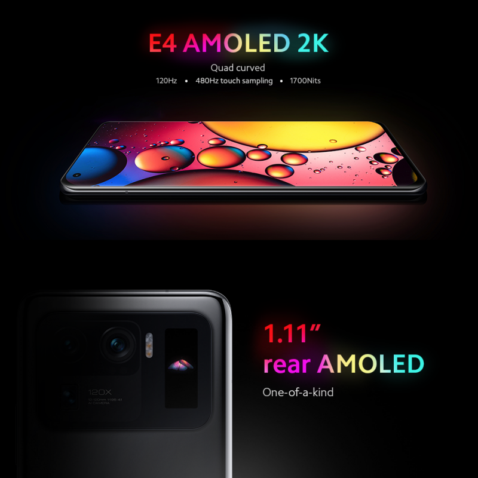
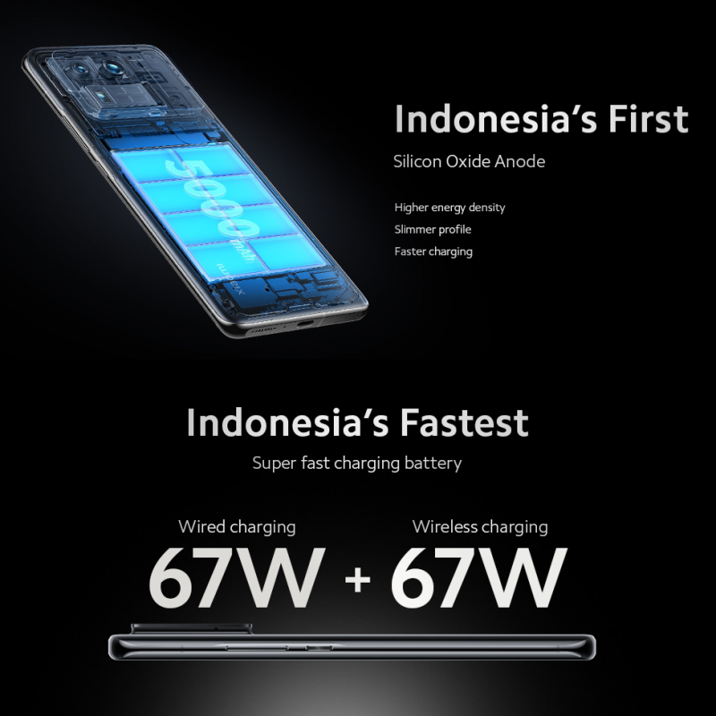
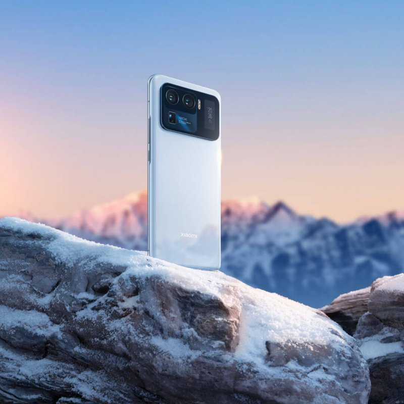
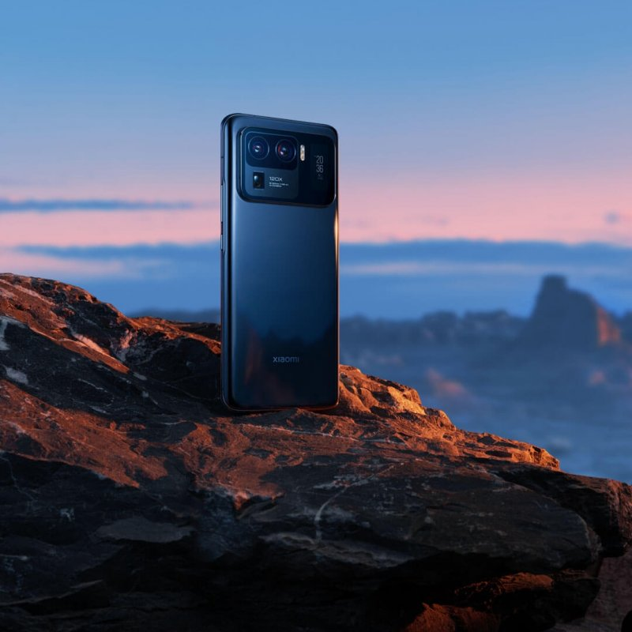
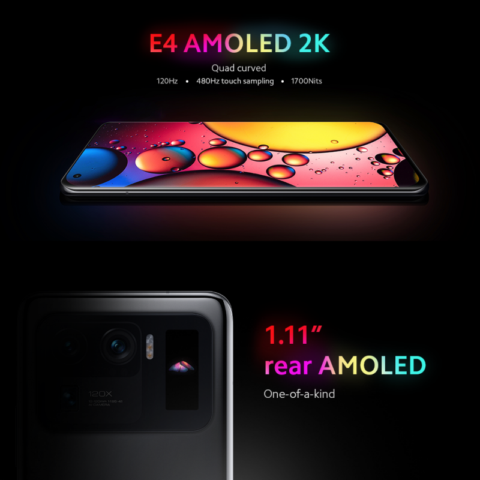
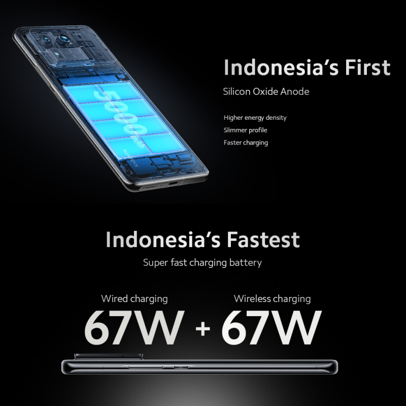
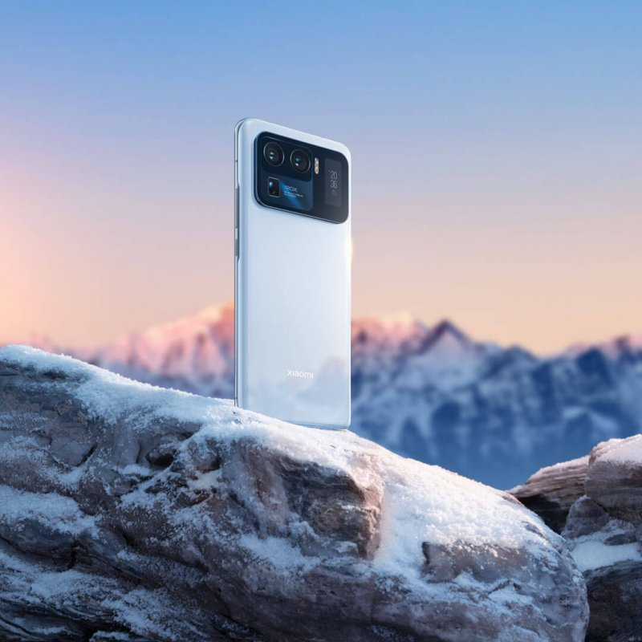
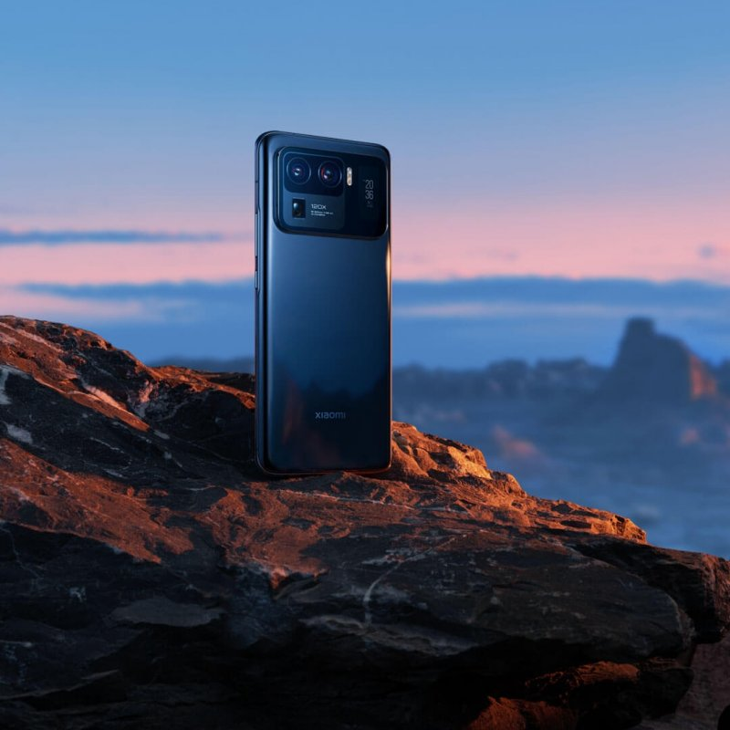

Mi 11 Ultra
The Ultimate Flagship Smartphone by Xiaomi

Mi 11 Ultra adalah Smartphone Flasghip besutan Xiaomi untuk tahun 2021. Smartphone ini memiliki ukuran sensor kamera yang sangat besar saat awal perilisannya dan sempat menduduki peringkat pertama DxOmark di 2021 lalu menyaingi Huawei Mate 40 Pro dan iPhone 12 Pro Max. Dengan kemampuan kameranya yang superior dan performa kelas atas, smartphone ini patut dilirik terkhususnya bagi para MiFans diluar sana. Meskipun sudah berumur kurang lebih 3 tahun tetapi masih sangat overkill di tahun 2024 menuju 2025 ini. Smartphone ini jelas dilengkapi dengan setup 3 kamera dengan kamera utama 50MP dilengkapi sensor nyaris 1 inci, 1 /1,12” f/1,95 ber-OIS , 48MP Ultrawide FOV 128°, f/2,2 ber-OIS camera, dan kamera 48MP Telephoto macro Ukuran sensor 1 /2,0” yang juga dilengkapi dengan OIS. Dengan SoC Flagship Qualcomm, Qualcomm® Snapdragon™ 888 dan dilengkapi baterai yang cukup besar sebesar 5000mAh, serta layar WQHD+ 6.81” AMOLED DotDisplay PPI 3200x1440 120Hz 10Bit Panel 1Billion Color, 515dpi dengan Rasio aspek: 20:9 untuk pengalaman pengguna yang memanjakan mata, baik untuk general usage maupun untuk menonton dan bermain game. Untuk varian yang masuk ke indonesia hanya varian tengah dengan kapasitas RAM 12GB dan Storage 256GB.
Mi 11 ultra dijual dengan harga 16,999 juta rupiah saat rilis, namun bisa kalian dapatkan dengan hanya 10-14 juta saja untuk Brand New dan 6-10 jutaan untuk unit secondhand. Mi 11 ultra hadir dengan 2 warna yang elegan yaitu Ceramic White dan Ceramic Black. Jelas hingga saat ini Mi 11 Ultra tetap menjadi monster di kelas Flagship Premium.
Spesifikasi Mi 11 Ultra:
Ringkasan spesifikasi
Mi 11 Ultra Color
Mi 11 Ultra Ceramic Black (cosmic black)
Mi 11 Ultra Ceramic White (cosmic white)
Prosesor
Qualcomm® Snapdragon™ 888
Proses pembuatan 5nm yang efisien daya
CPU: Qualcomm® Kryo™ 680, up to 2,84 GHz, dengan teknologi Arm Cortex-X1
GPU: GPU Qualcomm® Adreno™ 660
AI: Mesin AI Generasi ke-6
Modem 5G Snapdragon X60
Penyimpanan & RAM : 12GB + 256GB, 12GB+512GB
LPDDR5 + UFS 3.1
Dimensi
Tinggi: 164,3 mm
Lebar: 74,6 mm
Ketebalan: 8,38 mm
Berat: 234g
Layar
Layar quad-curved
WQHD+ 6.81” AMOLED DotDisplay
PPI 3200x1440, 515dpi
Rasio aspek: 20:9
Rasio kontras: 5000000:1
Gamut warna: DCI-P3
Kecerahan: HBM 900 nit (umum), 1700 nits kecerahan puncak (umum),1 Milliar warna ,HDR 10+
Rasio refresh: 120Hz
Layar AdaptiveSync: 30 Hz/60 Hz/90 Hz/120 Hz
Rasio touch sampling: hingga 480Hz
Mendukung MEMC (Transform videos 24fps hingga 48fps, 25fps hingga 50fps, 30fps hingga 60fps)
Tampilan TrueColor: JNCD≈0.38, Delta E≈0.41
1,07 miliar warna
Tampilan AI
Mendukung tampilan sinar matahari 3.0
DisplayMate A+
Mendukung mode baca 3.0
Sensor cahaya ambien 360° 2.0
Corning® Gorilla® Glass Victus™
Sertifikasi SGS Eye Care Display
Kamera Belakang
50MP kamera wide-angle
Ukuran piksel 1,4 μm, Super Pixel 4-in-1 2,8 μm
Ukuran sensor 1 /1,12” Samsung GN2
f/1,95
OIS (Optical Image Stabilizer)
Lensa 8P
Dual Native ISO Fusion
Staggered-HDR
Dual Pixel Pro
48MP kamera ultra-wide angle
FOV 128°, f/2,2
Ukuran piksel 0,8 μm, Siper Pixel 4-in-1 1,6 μm
Ukuran sensor 1 /2,0”, Lensa 7P, PDAF
48MP kamera telefoto
Zoom digital 120x, zoom hybrid 10x, zoom optik 5x, OIS
Ukuran piksel 0,8 μm, Siper Pixel 4-in-1 1,6 μm
Ukuran sensor 1 /2,0”, PDAF
Fitur fotografi kamera belakang
Mode malam 2.0 + Ultra Night Photos
Action capture
Fitur video kamera belakang
Video kamera lebar
Video 8K: 24 fps, mendukung HDR 10
Video 4K: 60 fps / 30 fps, mendukung HDR 10+
Video 1080P: 60 fps / 30 fps, pengambilan gambar gerakan lambat: 120 fps / 240 fps / 480 fps / 960 fps / 1920 fps
Video 720P: 30 fps, pengambilan gambar gerakan lambat: 120 fps / 240 fps / 480 fps / 960 fps / 1920 fps
Kamera telefoto / Video kamera ultra-lebar Video 8K: 24 fps
Video 4K: 60 fps / 30 fps
Video 1080P: 60 fps / 30 fps, pengambilan gambar gerakan lambat: 120 fps / 240 fps / 480 fps / 960 fps / 1920 fps
Video 720P: 30 fps, pengambilan gambar gerakan lambat: 120 fps / 240 fps / 480 fps / 960 fps / 1920 fps
Kamera Depan
20MP kamera selfie dalam tampilan
Fitur fotografi kamera depan
Mode Selfie Night
Fitur video kamera depan
Video HDR
Perekaman video kamera depan
1080p 1920x1080 di 30 fps/60 fps
720p 1280x720 pada kecepatan 30 fps
Video gerak lambat: 120fps, 720p
Baterai & Pengisian Daya
Baterai 5000mAh (typ)/ 4900mAh（min）
Anode silikon generasi ke-2
Teknologi MTW
Pengisian daya turbo dengan kabel 67W /pengisian daya turbo nirkabel 67W
Pengisi daya berkabel Inbox 67W
Jaringan & Konektivitas
SIM ganda
Pita jaringan:
Mendukung 5G* / 4G / 3G/ 2G
5G: n1 / n3 / n5/ n7 /n8/ n20/ n28/ n38/ n40 /n41 /n77 / n78 / n79
4G: FDD-LTE ：B1 / B2 / B3 / B4 / B5 / B7 / B8 / B12 / B17 / B20 / B28/ B32 /B66
4G: TDD-LTE：B38 / B40 / B41 / B42
3G: WCDMA：B1 / B2 / B4 / B5 / B8 / B19
2G: GSM：850 900 1800 MHz
Mendukung 4x4 MIMO
Jaringan Nirkabel
Wi-Fi 6E/Wi-Fi 6*
Bluetooth 5.2
Mendukung AAC/LDAC/LHDC
Navigasi & Pemosisian
GPS: L1+L5| Galileo E1 + E5a| Glonass G1 | Beidou
Audio
Hi-Res & Hi-Res Wireless Audio | Harman Kardon
Video
Mendukung tampilan HDR saat memutar konten video HDR10, HDR 10+, Dolby Vision
Tahan dari Percikan, Air, dan Debu IP68
Sensor
Sensor jarak | Sensor cahaya ambien | Akselerometer | Giroskop | Kompas elektronik | Sensor Hall | Motor linear sumbu X| IR Blaster | Sensor genggaman | Barometer | Sensor lampu belakang (suhu warna) | Sensor Kedip | Sensor fokus laser multi-titik
Sistem Operasi
MIUI 12* berbasis Android 11
NFC
Ya
Isi Kemasan
Ponsel / Adaptor / Casing Pelindung / Kabel USB Tipe-C / Adaptor Headphone Tipe-C hingga 3,5 mm / Alat Pembuka SIM / Panduan Pengguna & Kartu Garansi